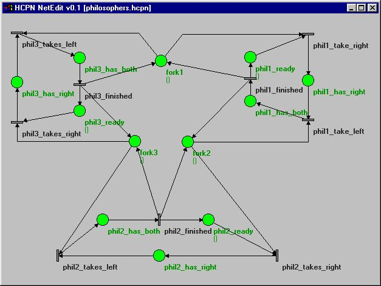
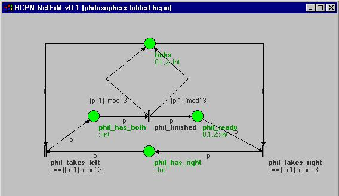
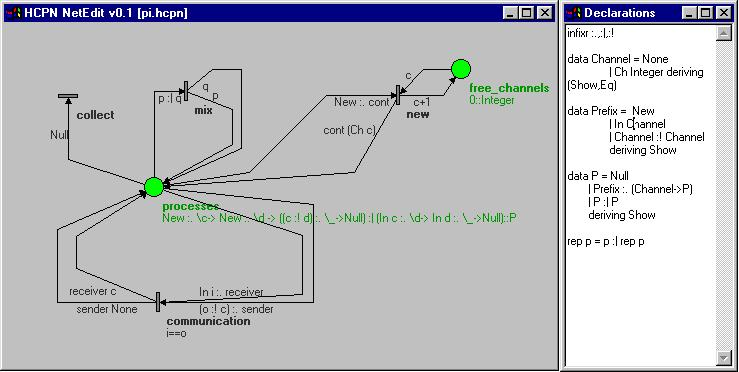

Coloured Petri Nets are a high-level form of Petri Nets (see also this short tour of Petri nets), in which anonymous tokens are replaced by data objects of some programming language (and transitions can operate on that data, in addition to moving it around). The combination of functional languages and Petri nets promises a rich design space - the two formalisms have little overlap and much to offer to each other.
Coloured Petri nets with functional inscription languages are a well-established starting point on this route, but are usually associated with high startup costs wrt tool support. By embedding such nets in their inscription languages, it is possible to reduce these startup costs drastically (from years to weeks), and although the resulting quick-start toolsets will not be able to compete with those evolved over years, they offer a cheep and cheerful entry route. One can get started quickly, invest more time and resources where and when needed, and, crucially, have access to the source code for experimentation and extension.
At IFL 1999, we outlined these ideas for the concrete example of Haskell-Coloured Petri nets, giving a simple embedding of such nets in Haskell. Somewhat to our disappointment, there has so far not been an abundance of Haskell-, Clean-, Erlang-, .. coloured nets in practical use. So we've decided to follow up our outline by concrete prototypical tool support for Haskell-Coloured Petri nets (HCPN for short), hoping that others will be encouraged to follow suit for nets with inscriptions in their favourite functional programming language (if your favourite fpl happens to be SML, have a look at CPN/Tools, the successor of Design/CPN).
So far, we have a bare-bones graphical editor for HCPN, building on the portable wxHaskell GUI library (Haskell binding to wxWidgets). From this, HCPN can be saved, loaded, and exported as Haskell code for graphical or textual simulation. (HCPN NetEdit is not quite ready for prime time yet, but functional; as long as you promise not to look at the ugly code, you can find a snapshot of version 0.1 here [now updated for wxHaskell-0.8];-).
For the curious, here's a simple example, the infamous deadlocking philosophers. First, as a plain Petri net (note that anonymous tokens are modelled as empty products, which are elided by default from arc labels and place types):
Of course, using coloured nets, we can replace the anonymous tokens by data values, say Ints 0,1,2 for the three forks and similarly for the three philosophers. Once we can distinguish the tokens this way, we can fold the matching places together and, in fact, we can fold the matching transitions as well if we calculate the forks to work with from the philosopher number:
And here's an example textual simulation run of the latter HCPN:
Mark {forks = [0,1,2], phil_ready = [0,1,2], phil_has_both = [], phil_has_right = []}
phil_takes_right
Mark {forks = [1,2], phil_ready = [0,2], phil_has_both = [], phil_has_right = [1]}
phil_takes_left
Mark {forks = [1], phil_ready = [0,2], phil_has_both = [1], phil_has_right = []}
phil_finished
Mark {forks = [0,2,1], phil_ready = [1,0,2], phil_has_both = [], phil_has_right = []}
phil_takes_right
Mark {forks = [0,2], phil_ready = [1,0], phil_has_both = [], phil_has_right = [2]}
phil_takes_right
Mark {forks = [2], phil_ready = [0], phil_has_both = [], phil_has_right = [1,2]}
phil_takes_left
Mark {forks = [], phil_ready = [0], phil_has_both = [1], phil_has_right = [2]}
phil_finished
Mark {forks = [0,2], phil_ready = [1,0], phil_has_both = [], phil_has_right = [2]}
phil_takes_left
Mark {forks = [2], phil_ready = [1,0], phil_has_both = [2], phil_has_right = []}
phil_takes_right
Mark {forks = [], phil_ready = [1], phil_has_both = [2], phil_has_right = [0]}
phil_finished
Mark {forks = [1,0], phil_ready = [2,1], phil_has_both = [], phil_has_right = [0]}
phil_takes_right
Mark {forks = [0], phil_ready = [1], phil_has_both = [], phil_has_right = [2,0]}
phil_takes_left
Mark {forks = [], phil_ready = [1], phil_has_both = [2], phil_has_right = [0]}
phil_finished
Mark {forks = [1,0], phil_ready = [2,1], phil_has_both = [], phil_has_right = [0]}
phil_takes_right
Mark {forks = [1], phil_ready = [2], phil_has_both = [], phil_has_right = [1,0]}
phil_takes_right
Mark {forks = [], phil_ready = [], phil_has_both = [], phil_has_right = [2,1,0]}
no more enabled transitions!
The Haskell code (here the older, slightly simpler version) generated is fairly recognizable, but not the kind of code you'd want to write by hand for larger nets:-)
-- generated by HCPN NetEdit v0.0
module Unnamed where
import SimpleHCPN
-- declarations
-- markings
data Mark = Mark {
forks :: [Int]
, phil_ready :: [Int]
, phil_has_both :: [Int]
, phil_has_right :: [Int]
} deriving Show
-- transition actions
phil_finished :: Mark -> [Mark]
phil_finished m =
do
let phil_has_both_marking = phil_has_both m
let forks_marking = forks m
let phil_ready_marking = phil_ready m
(p, phil_has_both_marking) <- select $ phil_has_both_marking
if True
then return m{
phil_has_both = phil_has_both_marking
, forks = ((p-1) `mod` 3) : ((p+1) `mod` 3) : forks_marking
, phil_ready = (p) : phil_ready_marking
}
else fail "guard failed"
phil_takes_left :: Mark -> [Mark]
phil_takes_left m =
do
let forks_marking = forks m
let phil_has_right_marking = phil_has_right m
let phil_has_both_marking = phil_has_both m
(f, forks_marking) <- select $ forks_marking
(p, phil_has_right_marking) <- select $ phil_has_right_marking
if f == ((p+1) `mod` 3)
then return m{
forks = forks_marking
, phil_has_right = phil_has_right_marking
, phil_has_both = (p) : phil_has_both_marking
}
else fail "guard failed"
phil_takes_right :: Mark -> [Mark]
phil_takes_right m =
do
let forks_marking = forks m
let phil_ready_marking = phil_ready m
let phil_has_right_marking = phil_has_right m
(f, forks_marking) <- select $ forks_marking
(p, phil_ready_marking) <- select $ phil_ready_marking
if f == ((p-1) `mod` 3)
then return m{
forks = forks_marking
, phil_ready = phil_ready_marking
, phil_has_right = (p) : phil_has_right_marking
}
else fail "guard failed"
-- transitions
net = Net{trans=[ Trans{name="phil_finished",action=phil_finished}
, Trans{name="phil_takes_left",action=phil_takes_left}
, Trans{name="phil_takes_right",action=phil_takes_right}
]}
-- initial marking
mark = Mark{ forks = [0,1,2]
, phil_ready = [0,1,2]
, phil_has_both = []
, phil_has_right = []
}
-- end
Another, possibly more interesting example is an embedding of a pi-calculus into HCPN. That this is possible may surprise those who still equate Petri nets entirely with the simple anonymous token variant, or presume that the static nature of Petri nets precludes the modeling of dynamic process systems, but the embedding is straightforward. One just has to decide which parts of the system to be modelled are static and which are dynamic, and of course, higher order abstract syntax using Haskell's anonymous functions helps to cope with the binding structure of this pi-calculus. The dynamic part is the "process soup", which is mapped onto a multiset of process tokens on a single place, and the static part are the reaction rules, which are mapped to a transition per rule (as a variation, replication is mapped to recursion in Haskell; either way, this isn't very practical - one would want to limit the use of replication in practice). This embedding is not specific to the pi-calculus, but covers multiset rewrite systems in general.
A few points to note about this example:
communication transition uses a guard to
guarantee equality of sender and receiver channels. Permitting
repeated variables on the set of input arcs would be more concise,
but would complicate the embedding of HCPN in Haskell.